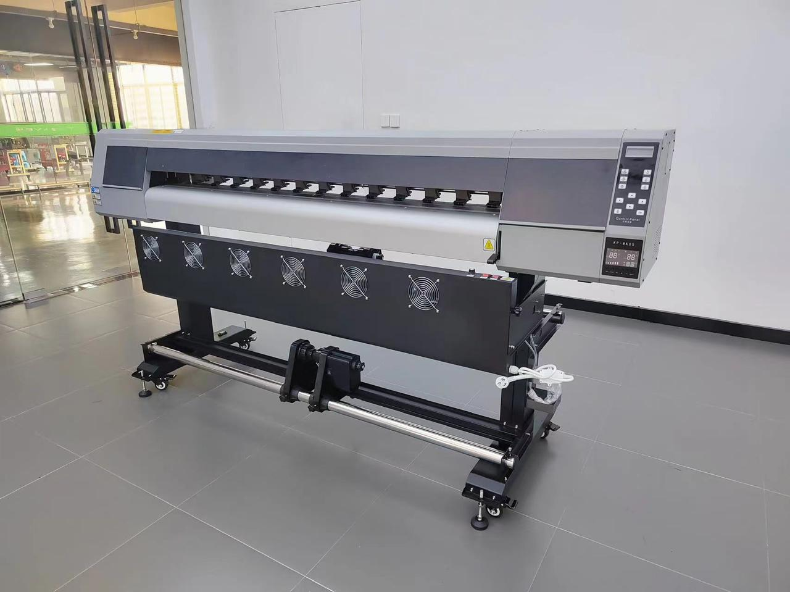

The Double Head version offers better speed and productivity, making it ideal for medium-scale businesses.A faster model suited for medium-scale flexible media printing.

| Model | Print Heads | Speed |
|---|---|---|
| Double Head Body (1802) | Epson i3200 E1 | 130 sq.ft/hr (on 4 pass) |
A UV roll to roll double head printer is used for faster large-format printing on flexible media for advertising, signage, and commercial branding applications.
Double head printers provide higher production speed, improved print efficiency, stable performance, and excellent print quality for bulk printing work.
The machine can print on flex, vinyl, mesh banners, wallpapers, backlit media, and various roll-to-roll printable materials.
Yes, it is ideal for commercial printing businesses handling medium to high-volume production work.
You should choose the printer according to printing speed, printhead configuration, media compatibility, print quality, and production needs.